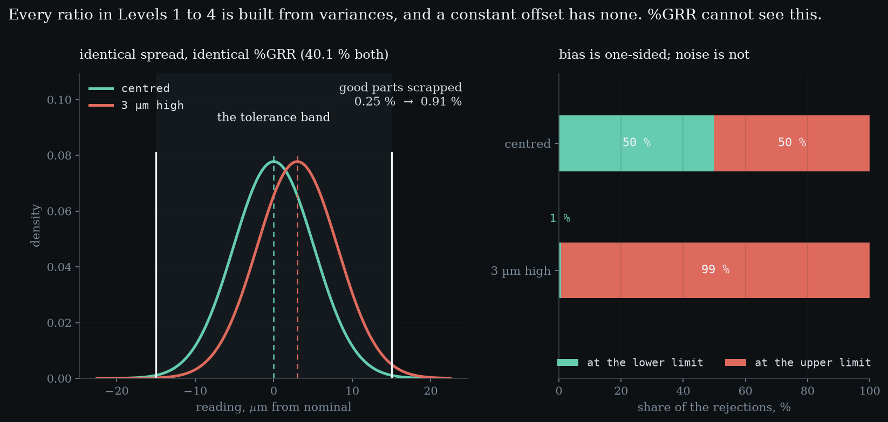
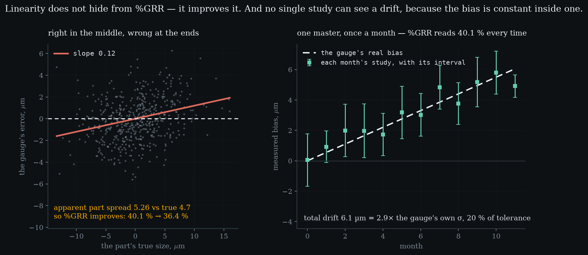

Level 5 · chapter five
Bias, linearity, stability
Every number in the first four levels is built out of variances, and every one of them assumed a mean of zero. A gauge that reads three microns high has no extra variance at all — so the whole apparatus is blind to it, while the scrap bill is not.
after Level 4 — %GRR, ndc, and against what·leads to Level 6 — attribute agreement
- 5.1Four levels with a mean of zeroshift every reading and not one number moves
- 5.2The scrap bill is not blindfour times the rejections, and 99 % at one limit
- 5.3You cannot find it by measuring againit takes a reference, and then it takes 498 readings
- 5.4Linearity does not hide — it flattersthe gauge's own defect counted as process variation
- 5.5And it was right in March6 µm of drift while %GRR reads the same every month
Four levels with a mean of zero
Everything so far is made of variances. A repeatability, a reproducibility, an interaction, and two ratios built out of them. Not one of those quantities contains a term that says where the readings sit — only how far apart they are.
So take the gauge those levels built, 2.0591 µm, and make it read 3 µm high. the same gauge, moved off centreagainst study, centred40.1289 %against study, 3 µm high40.1289 %against tolerance, centred41.1825 %against tolerance, 3 µm high41.1825 %Everywhere, on every part, all day. Both of Level 4's percentages are unchanged — not approximately, not to two figures, but to the last decimal the arithmetic carries.
A standard deviation is computed from the distances between readings and their own mean. what R&R is forIt answers whether the gauge can distinguish. Whether it is correct is a different question, and it needs a different instrument.Shift every reading by the same amount and those distances are identical. There is nowhere in either formula for a bias to enter, so this is not a weakness of the method — it is what the method is.
The scrap bill is not blind
The percentages do not move. The factory does.
With the gauge centred, 0.25 % of the parts that are genuinely inside tolerance get rejected anyway, and the mistakes split evenly between the two limits — exactly evenly, because the arithmetic is symmetric. what the same bias does to the decisiongood parts rejected, centred0.2479 %of those, at the upper limit50.0 %good parts rejected, 3 µm high0.9072 %of those, at the upper limit99.3 %Add the 3 µm and that rate goes to 0.91 %, 3.7 times higher, and 99 % of it now happens at one limit.
That asymmetry is the useful part, because noise cannot produce it. what an operator seesNot a percentage. A pattern in which direction the rejects fall.A gauge that is merely imprecise throws away good parts in both directions. When the rework bench only ever sees oversize parts, the gauge is a better suspect than the process.

- against study %
- —
- against tolerance %
- —
- good parts rejected %
- —
- at the upper limit %
- —
Drag the bias. The two ratios do not move, because neither formula contains a term the bias could enter — while the scrap climbs and goes one-sided, which is the signature an operator sees. Then drag the linearity slope: the ratios finally move, and they get better, because the gauge’s own error is being counted as part-to-part spread.
You cannot find it by measuring again
Repeatability is measured by reading the same part twice. Bias cannot be, at any sample size, because both readings carry it equally. Ten thousand readings of an unknown part give a very precise estimate of the spread and no information at all about where that spread sits.
It takes a reference — something whose size is already known by better means. one reference studyreadings of the master10mean error+2.424 µminterval half-width1.532 µmcontains zeronoThen the question is whether a confidence interval on the mean error contains zero. 10 readings of a master that is truly 3 µm out gave a mean error of +2.424 µm and an interval of [+0.892, +3.956] — clear of zero, so detected, but only just.
The bias you want to catch sits in the denominator, and it is squared. the asymmetryLevel 1 showed averaging buying precision at one over root m. Here the same root works against you.Catching 3 µm takes 8 readings. Halving that to 1.5 does not double the work, it roughly quadruples it: 22. Chasing 0.3 µm takes 498. Precision gets cheaper with repetition, because averaging divides it by the root of the count. Accuracy does not, because it is not a spread.
Linearity does not hide — it flatters
The second way to be wrong is to be right in the middle and wrong at the ends: a worn anvil, a fixture that does not locate the same way across the range, a scale whose gain is off. The error is then a fraction of the reading rather than a constant.
A slope of 0.12 means a part ten microns oversize reads 1.2 µm high. the defect that improves the scoreslope0.12true part spread4.70 µmapparent part spread5.26 µmagainst study, linear40.1 %against study, non-linear36.4 %Because the error now grows with the part, it widens the spread of the readings: the apparent part variation rises from 4.70 µm to 5.26, up 12 %. That spread is the denominator of the study ratio.
So the ratio improves, by 3.7 points. why the tolerance ratio is unmovedIts denominator came off a drawing, so nothing the gauge does can change it. Level 4, section two, in reverse.The instrument's own defect is counted as process variation and the gauge is rewarded for having it. That is worse than a blind spot: a blind spot reports nothing, and this reports good news.

And it was right in March
The third way to be wrong is to have been right. A gauge drifts: a reference surface wears, a temperature compensation goes stale, a battery sags. Nothing is wrong on any single day.
Run the same study on a master once a month for 12 months, with the gauge drifting 0.55 µm each month. a year of correct studiesdrift per month0.55 µmtotal drift6.05 µmas a share of tolerance20.2 %%GRR, every month40.1289 %months a master read 'no bias'2 of 12By the end it reads 6.05 µm high — 2.9 times the gauge's own sigma and 20 % of the whole tolerance. And every study is internally fine: %GRR reads 40.1289 % every single month, and the repeatability estimates vary over only 0.238 µm across the year.
The reason is structural rather than statistical: the bias is constant inside one afternoon, so a study run in one afternoon has nothing to see. stability is a question about a sequenceNo single study answers it at any sample size. It needs the old studies kept and compared, which is a different discipline from this one.The drift exists only between studies, which means it is only visible if somebody kept the old ones and plotted them. Even with a master, a single month first notices at month 2, and 2 of the 12 months read as no bias at all.
Five levels in, the honest summary is that R&R answers one question about a measurement system, and it is not the question of whether the gauge is right. the seam aheadLevel 6 is the gauge that says pass or fail. No variance, no sigma, no ratio — and the same questions still have to be answered.Which leaves one assumption still standing, and it is the largest: that a reading is a number at all.